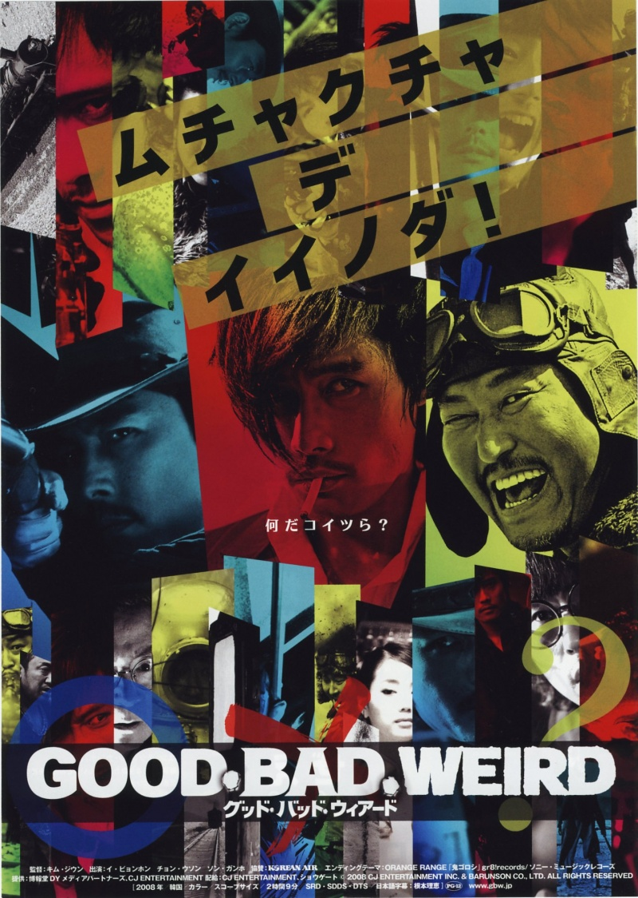
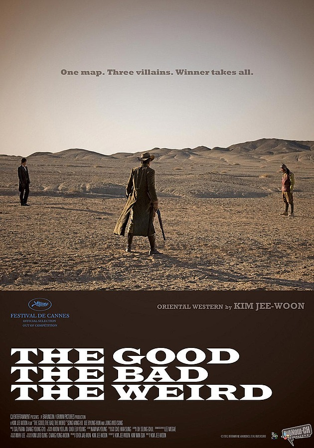
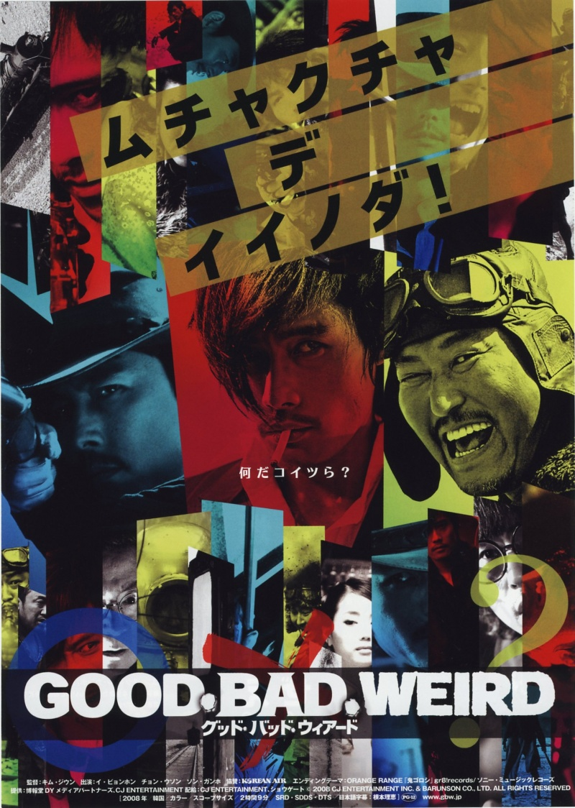
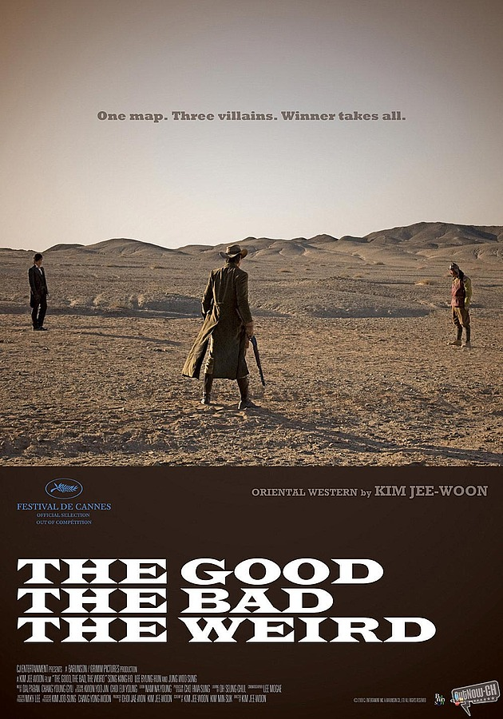
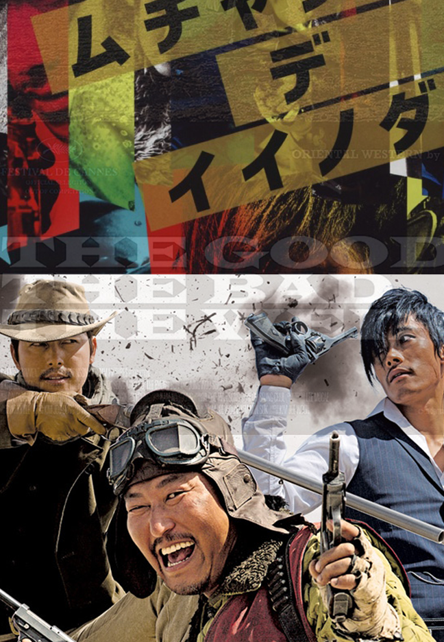
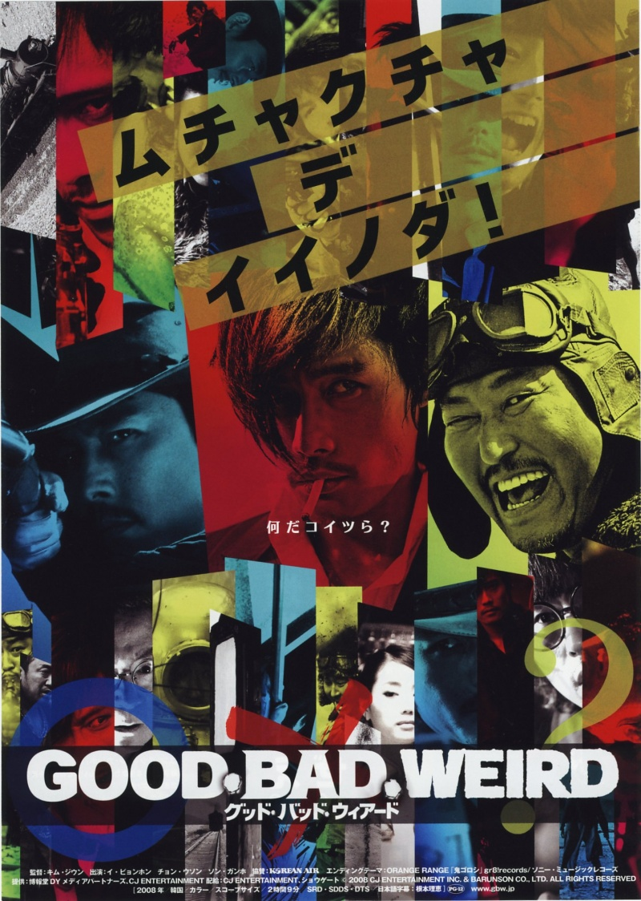
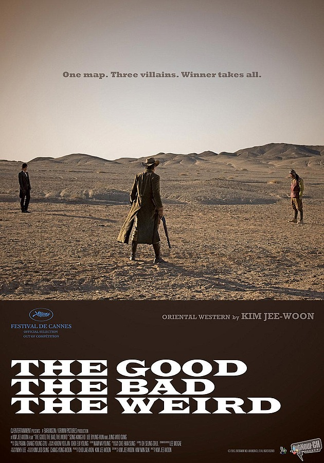

The Good The Bad The Weird
Kim Jee-woon
In the desert wilderness of Manchuria in 1939, months before the Second World War. Park Chang-yi, The Bad (Lee Byung-hun)—a bandit and hitman—is hired to acquire a treasure map from a Japanese official traveling by train. Before he can get it however, Yoon Tae-goo, The Weird (Song Kang-ho)—a thief—steals the map and is caught up in The Bad's derailment of the train. This involves the slaughter of the Japanese and Manchurian guards, and various civilians. Park Do-won, The Good (Jung Woo-sung)—an eagle-eyed bounty hunter—appears on the scene to claim the bounty on Chang-yi. Meanwhile, Tae-goo escapes, eluding his Good and Bad pursuers. A fourth force—a group of Manchurian bandits—also want the map to sell to the Ghost Market. Tae-goo hopes to uncover the map's secrets and recover what he believes is gold and riches buried by the Qing Dynasty just before the collapse of their government. As the story continues, an escalating battle for the map occurs, with bounties placed on heads and the Imperial Japanese Army racing to reclaim its map as it can apparently "save the Japanese Empire".
All of the three versions of the poster have images of the good one, the bad one, and the weird. It is hard to tell which one is which, but you can tell who the weird one is by looking at Korean and Japanese versions of the poster. The Korean poster made it more clear to get who is the good, the bad, the weird, than the other two posters. The Japanese poster is designed to look like strips of masking tapes or paper is layered. It looks like a collage that a fan of the movie would make, rather than capturing the mood of the film. On the bottom of the Japanese poster, there are three symbols, "O", "X", and "?" that will hint you of which one is which. The U.S. version of the poster reminds me of cowboy film. Just by looking at the poster, the movie looks like a hollywood film, not a Korean oen. However, the U.S. version did a great job at showing the tension between the three men and hinting about the plot with the tagline.